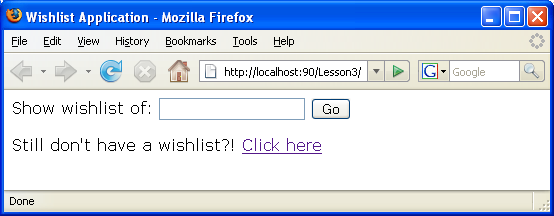
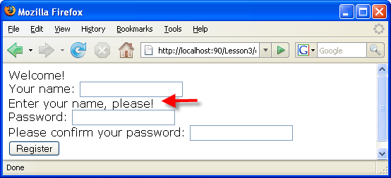
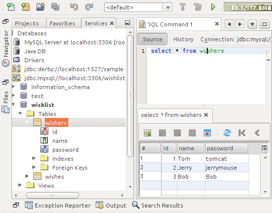

Apache NetBeans
Apache NetBeansLatest release
レッスン3: 新規アプリケーション・ユーザーの作成
| This tutorial needs a review. You can open a JIRA issue, or edit it in GitHub following these contribution guidelines. |
このレッスンでは、新規ウィッシャの作成機能を使用してアプリケーションを拡張します。
この実装はindex.phpファイルに影響し、 createNewWisher.php および editWishList.php という名前の2つの新しいファイルが作成されます。
新規ウィッシャの作成のユース・ケースは、3つのステップで構成されます。
-
新しいウィッシャを作成した後、ユーザーはeditWishList.phpに切り替え、ユーザーのウィッシュ・リストを作成する。

現在のドキュメントは、PHP向けのNetBeans IDEでのデータベース・アプリケーションの作成というチュートリアルの一部です。
前のレッスンからのアプリケーション・ソース・コード
新規ウィッシャの作成を開始するリンクの追加
``index.php`` を開きます。終了の</form>タグの下に空白行を追加します。その空白行に、次のコード・ブロックを入力します。
<br>Still don't have a wish list?! <a href="createNewWisher.php">Create now</a>ここでは次のようになっています。
-
Still don’t have a wish list?!は、リンクの横のページ上に表示されるテキストです。 -
<a href="createNewWisher.php"></a>は、createNewWisher.phpページを開くリンクを実装するコードです。 -
Create nowは、リンクとして表示されるテキストです。
新規PHP Webページの作成
レッスン2の説明に従い、プロジェクトのソース・ファイルに新しいPHP Webページを2つ作成します。
-
createNewWisher.php -
editWishList.php``editWishList.php`` に、「Hello!」というテキストをHTMLの本体に追加し、その他の部分はデフォルトの内容のままにします。このファイルは後のレッスンで変更しますが、 ``createNewWisher.php`` がこのファイルを参照するため、ここでは存在する必要があります。このレッスンでは、 ``createNewWisher.php`` を変更します。
新規ウィッシャのデータを入力するためのHTMLフォームの追加
次のHTMLブロックを、 createNewWisher.php のPHPブロックの下に入力するか、または貼り付けます。
<html>
<head>
<meta http-equiv="content-type" content="text/html; charset=UTF-8">
<title></title>
</head>
<body>Welcome!<br><form action="createNewWisher.php" method="POST">Your name: <input type="text" name="user"/><br/>Password: <input type="password" name="password"/><br/>Please confirm your password: <input type="password" name="password2"/><br/><input type="submit" value="Register"/></form></body>
</html>
password 型は、文字がアスタリスクに置き換えられる、特殊なテキスト・フィールドの型です。コードは、ユーザーが新しいウィッシャの名前とパスワードをテキスト・フィールドに入力するためのHTMLフォームを示します。ユーザーが「Register」ボタンをクリックすると、入力したデータが、検証のために同じページ createNewWisher.php に転送されます。
|
| HTMLバリデータからの警告は無視できます。 |
データの検証とデータベースへの追加
この項では、 createNewWisher.php にPHPコードを追加します。このコードを、ファイルの先頭にあるPHPブロックに追加します。PHPブロックは、*すべての*HTMLコード、空白行、または空白の上にある必要があります。PHPコード・ブロックの位置は、リダイレクト文を正しく機能させるために重要です。PHPブロックの内部に、この項に示す次のコード・ブロックを記述されている順序で入力するか、または貼り付けます。
次のコードを追加し、データを検証します。
-
変数を初期化します。最初の変数はデータベースの証明書を渡し、その他はPHP操作で使用される変数です。
/** database connection credentials */$dbHost="localhost"; //on MySql
$dbXeHost="localhost/XE"; $dbUsername="phpuser";$dbPassword="phpuserpw";
/** other variables */
$userNameIsUnique = true;
$passwordIsValid = true;
$userIsEmpty = false;
$passwordIsEmpty = false;
$password2IsEmpty = false;-
変数の下に
if節を追加します。if節のパラメータは、ページがPOSTメソッド経由で同じページからリクエストされたことを確認します。そうでない場合、それ以上の検証は実行されず、ページは前述のように空のフィールドで表示されます。
/** Check that the page was requested from itself via the POST method. */
if ($_SERVER["REQUEST_METHOD"] == "POST") {
}-
if節の中括弧内に、ユーザーがウィッシャの名前を入力したかどうかを確認するための別のif節を追加します。テキスト・フィールド「user」が空の場合は、$userIsEmptyの値がtrueに変わります。
/** Check that the page was requested from itself via the POST method. */
if ($_SERVER["REQUEST_METHOD"] == "POST") {
/** Check whether the user has filled in the wisher's name in the text field "user" */ *
if ($_POST["user"]=="") {
$userIsEmpty = true;
}*
}-
データベース接続を確立するコードを追加します。接続が確立できない場合、MySQLまたはOracle OCI8エラーが出力に送信されます。
MySQLデータベースの場合:
/** Check that the page was requested from itself via the POST method. */
if ($_SERVER["REQUEST_METHOD"] == "POST") {
/** Check whether the user has filled in the wisher's name in the text field "user" */
if ($_POST["user"]=="") {
$userIsEmpty = true;
}
/** Create database connection */*$con = mysqli_connect($dbHost, $dbUsername, $dbPassword);
if (!$con) {
exit('Connect Error (' . mysqli_connect_errno() . ') '
. mysqli_connect_error());
}
//set the default client character set
mysqli_set_charset($con, 'utf-8');*
}Oracleデータベースの場合:
/** Check that the page was requested from itself via the POST method. */
if ($_SERVER['REQUEST_METHOD'] == "POST") {
/** Check whether the user has filled in the wisher's name in the text field "user" */
if ($_POST['user'] == "") {
$userIsEmpty = true;
}
/** Create database connection */*$con = oci_connect($dbUsername, $dbPassword, $dbXeHost, "AL32UTF8");
if (!$con) {
$m = oci_error();
exit('Connect Error' . $m['message']);
}*
}-
「user」フィールドと名前が一致するユーザーが、すでに存在するかどうかを確認するコードを追加します。このコードは、「user」フィールド内の名前と一致する名前のウィッシャID番号の検索することによって、これを実行します。そのようなID番号が存在する場合、
$userNameIsUniqueの値は「false」に変更されます。
MySQLデータベースの場合:
/** Check that the page was requested from itself via the POST method. */
if ($_SERVER["REQUEST_METHOD"] == "POST") {
/** Check whether the user has filled in the wisher's name in the text field "user" */
if ($_POST["user"]=="") {
$userIsEmpty = true;
}/** Create database connection */$con = mysqli_connect($dbHost, $dbUsername, $dbPassword);if (!$con) {exit('Connect Error (' . mysqli_connect_errno() . ') '. mysqli_connect_error());}*/**set the default client character set */
mysqli_set_charset($con, 'utf-8');*
*/** Check whether a user whose name matches the "user" field already exists */**mysqli_select_db($con, "wishlist");
$user = mysqli_real_escape_string($con, $_POST["user"]);
$wisher = mysqli_query($con, "SELECT id FROM wishers WHERE name='".$user."'");
$wisherIDnum=mysqli_num_rows($wisher);
if ($wisherIDnum) {
$userNameIsUnique = false;
}*
}Oracleデータベースの場合:
/** Check that the page was requested from itself via the POST method. */
if ($_SERVER['REQUEST_METHOD'] == "POST") {
/** Check whether the user has filled in the wisher's name in the text field "user" */
if ($_POST['user'] == "") {
$userIsEmpty = true;
}
/** Create database connection */$con = oci_connect($dbUsername, $dbPassword, $dbXeHost, "AL32UTF8");
if (!$con) {
$m = oci_error();
exit('Connection Error ' . $m['message']);
}
*/** Check whether a user whose name matches the "user" field already exists */*
*$query = "SELECT id FROM wishers WHERE name = :user_bv";
$stid = oci_parse($con, $query);
$user = $_POST['user'];
$wisherID = null;
oci_bind_by_name($stid, ':user_bv', $user);
oci_execute($stid);
// Each user name should be unique. Check if the submitted user already exists.
$row = oci_fetch_array($stid, OCI_ASSOC);
if ($row){
$userNameIsUnique = false;
}*
}-
ユーザーが一意かどうかを確認するコードの後に、ユーザーがパスワードを正しく入力して確認入力したかどうかを確認する一連の
if節を追加します。コードは、フォーム内の「Password」("password")および「Confirm Password」('password2)の各フィールドが空でなく、同一であることを確認します。そうでない場合は、それに応じて対応するブール型変数の値が変わります。
if ($_POST["password"]=="") {$passwordIsEmpty = true;
}if ($_POST["password2"]=="") {$password2IsEmpty = true;
}if ($_POST["password"]!=$_POST["password2"]) {$passwordIsValid = false;
}-
「wishers」データベースに新しいエントリを挿入するコードを追加して、
if ($_SERVER['REQUEST_METHOD']=="POST")節を完成させます。コードは、ウィッシャの名前が一意に指定されていること、およびパスワードが有効に入力および確認されていることを確認します。条件を満たす場合、コードはHTMLフォームから「user」と「password」の値を取り、wishersデータベース内の新しい行のName列とPassword列にそれぞれ挿入します。行を作成した後、コードはデータベース接続を切断し、アプリケーションをページeditWishList.phpにリダイレクトします。
MySQLデータベースの場合:
/** Check that the page was requested from itself via the POST method. */
if ($_SERVER['REQUEST_METHOD'] == "POST") {
/** Check whether the user has filled in the wisher's name in the text field "user" */
if ($_POST['user'] == "") {
$userIsEmpty = true;
}
/** Create database connection */
$con = mysqli_connect($dbHost, $dbUsername, $dbPassword);
if (!$con) {
exit('Connect Error (' . mysqli_connect_errno() . ') '
. mysqli_connect_error());
}
//set the default client character set
mysqli_set_charset($con, 'utf-8');
/** Check whether a user whose name matches the "user" field already exists */
mysqli_select_db($con, "wishlist");
$user = mysqli_real_escape_string($con, $_POST['user']);
$wisher = mysqli_query($con, "SELECT id FROM wishers WHERE name='".$user."'");
$wisherIDnum=mysqli_num_rows($wisher);
if ($wisherIDnum) {
$userNameIsUnique = false;
}
/** Check whether a password was entered and confirmed correctly */
if ($_POST['password'] == "") {
$passwordIsEmpty = true;
}
if ($_POST['password2'] == "") {
$password2IsEmpty = true;
}
if ($_POST['password'] != $_POST['password2']) {
$passwordIsValid = false;
}
/** Check whether the boolean values show that the input data was validated successfully.
* If the data was validated successfully, add it as a new entry in the "wishers" database.
* After adding the new entry, close the connection and redirect the application to editWishList.php.
*/
*if (!$userIsEmpty && $userNameIsUnique && !$passwordIsEmpty && !$password2IsEmpty && $passwordIsValid) {
$password = mysqli_real_escape_string($con, $_POST['password']);
mysqli_select_db($con, "wishlist");
mysqli_query($con, "INSERT wishers (name, password) VALUES ('" . $user . "', '" . $password . "')");
mysqli_free_result($wisher);
mysqli_close($con);
header('Location: editWishList.php');
exit;
}*
}Oracleデータベースの場合:
/** Check that the page was requested from itself via the POST method. */
if ($_SERVER['REQUEST_METHOD'] == "POST") {
/** Check whether the user has filled in the wisher's name in the text field "user" */
if ($_POST['user'] == "")
$userIsEmpty = true;
/** Create database connection */
$con = oci_connect($dbUsername, $dbPassword, $dbXeHost, "AL32UTF8");
if (!$con) {
$m = oci_error();
echo $m['message'], "\n";
exit;
}
/** Check whether a user whose name matches the "user" field already exists */
$query = "select ID from wishers where name = :user_bv";
$stid = oci_parse($con, $query);
$user = $_POST['user'];
$wisherID = null;
oci_bind_by_name($stid, ':user_bv', $user);
oci_execute($stid);
/**Each user name should be unique. Check if the submitted user already exists. */
$row = oci_fetch_array($stid, OCI_ASSOC);
if ($row) {
$wisherID = $row['ID'];
}
if ($wisherID != null) {
$userNameIsUnique = false;
}
//Check for the existence and validity of the password
if ($_POST['password'] == "") {
$passwordIsEmpty = true;
}
if ($_POST['password2'] == "") {
$password2IsEmpty = true;
}
if ($_POST['password'] != $_POST['password2']) {
$passwordIsValid = false;
}
/** Check whether the boolean values show that the input data was validated successfully.
* If the data was validated successfully, add it as a new entry in the "wishers" database.
* After adding the new entry, close the connection and redirect the application to editWishList.php.
*/
*if (!$userIsEmpty && $userNameIsUnique && !$passwordIsEmpty && !$password2IsEmpty && $passwordIsValid) {
$query = "INSERT INTO wishers (name, password) VALUES (:user_bv, :pwd_bv)";
$stid = oci_parse($con, $query);
$pwd = $_POST['password'];
oci_bind_by_name($stid, ':user_bv', $user);
oci_bind_by_name($stid, ':pwd_bv', $pwd);
oci_execute($stid);
oci_free_statement($stid);
oci_close($con);
header('Location: editWishList.php');
exit;
}*
}入力フォームでのエラー・メッセージの表示
ここでは、入力したデータが無効であった場合のエラー・メッセージの表示を実装します。この実装は、検証と、データの検証とデータベースへの追加に説明されているブール型変数の値の変更に基づいています。
-
次のPHPコード・ブロックを、HTML入力フォーム内の、ウィッシャの名前入力の下に入力します。
Welcome!<br><form action="createNewWisher.php" method="POST">Your name: <input type="text" name="user"/><br/>
*<?php
if ($userIsEmpty) {
echo ("Enter your name, please!");
echo ("<br/>");
}
if (!$userNameIsUnique) {
echo ("The person already exists. Please check the spelling and try again");
echo ("<br/>");
}
?> *-
次のPHPコード・ブロックを、HTML入力フォーム内の、パスワード入力のコードの下に入力します。
Password: <input type="password" name="password"/><br/>
*<?php
if ($passwordIsEmpty) {
echo ("Enter the password, please!");
echo ("<br/>");
}
?>*-
次のPHPコード・ブロックを、HTML入力フォーム内の、パスワード確認のコードの下に入力します。
Please confirm your password: <input type="password" name="password2"/><br/>
*<?php
if ($password2IsEmpty) {
echo ("Confirm your password, please");
echo ("<br/>");
}
if (!$password2IsEmpty && !$passwordIsValid) {
echo ("The passwords do not match!");
echo ("<br/>");
}
?>*新規ウィッシャの作成機能のテスト
-
アプリケーションを実行します。indexページが開きます。

-
indexページで、テキスト「Still don’t have a wish list?」の横にあるリンクをクリックします。次のフォームが開きます。

-
フィールドを空白のままにし、「Register」をクリックします。エラー・メッセージが表示されます。

-
登録済のウィッシャの名前を入力し(たとえば、「Your name」フィールドに「Tom」と入力)、その他のフィールドを正しく入力して、「Register」をクリックします。エラー・メッセージが表示されます。
-
「Password」フィールドと「Please confirm your password」フィールドに異なる値を入力し、「Register」をクリックします。エラー・メッセージが表示されます。
-
「Your name」フィールドに「Bob」と入力し、両方のパスワード・フィールドに同じパスワードを指定して「Register」をクリックします。表示されるページは空ですが、次のようにURLがeditWishList.phpで終わっているため、リダイレクションは正しく渡されています。

-
データがデータベースに格納されたことを確認するには、「サービス」ウィンドウのwislist1ノードの下にあるwishersに移動し、コンテキスト・メニューから「データを表示」を選択します。

現在のレッスン完了後のアプリケーション・ソース・コード
次の手順
users@php.netbeans.orgメーリング・リストに登録することによって、NetBeans IDE PHP開発機能に関するご意見やご提案を送信したり、サポートを受けたり、最新の開発情報を入手したりできます。